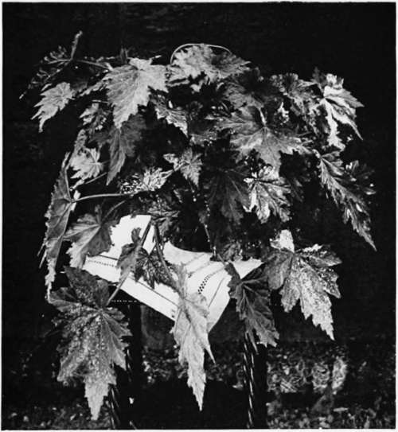

XII. What Windows To Grow Plants In
Description
This section is from the book "Indoor Gardening", by Eben E. Rexford. Also available from Amazon: Indoor Gardening.
XII. What Windows To Grow Plants In
THOSE who set out to grow plants in the house for the first time often make some serious mistakes by selecting kinds not adapted to the windows in which they propose to grow them.
Too often they take it for granted that a window with a western exposure is just as good as a window opening to the south, or to the east, and they find out their mistake when it is too late to rectify it. Unless proper exposure can be given plants, I would not advise trying to grow any until you are sure that you can modify existing conditions to a satisfactory extent.
There are many plants which must have full exposure to sunshine. They may live on indefinitely in sunless windows, but they will prove comparative failures there. There are some which do not care for sunshine, and seldom prove satisfactory in windows facing the south. Others like a moderate amount of sunshine, but soon fail if exposed to the strong, hot rays of the western sun. These things must be taken into consideration in making a selection of plants for the house, and the plants chosen must be such as are adapted to the exposures we happen to have if it is not possible to secure such as we would like.
Geraniums, Heliotropes, Abutilons, Roses and many other flowering plants that are favorites with amateur gardeners, like plenty of sunshine, and do better in windows with southern exposure than in any others. All foliage plants whose beauty depends on richness of coloring must be given sunshine in generous quantities in order to fully bring out their charms. Begonias, and other popular plants of similar habit, do best when given eastern windows to grow in, where they will get the sunshine of the forenoon, which is generally mild. Palms, Ferns, Ivies, and the several varieties of Asparagus now so extensively grown in the house, will flourish without sunshine, and are therefore adapted to windows with northern exposure. Few plants do well in western windows unless something is done to temper the hot afternoon sun. Persons who have other windows in which to keep their plants seldom attempt to make use of these. But the woman who has a great love for flowers will contrive to grow good ones under the unfavorable conditions governing western exposures, because she will make all possible efforts to effect a compromise between her plants and the sunshine. She will train vines over the window, outside. She will put up awnings which can be let down during the afternoon. She will hang curtains against the glass to break the heat, and she will succeed in growing better plants than her neighbor who has better facilities for plant-growing, but lacks her affection for them. When I see how some women grow fine plants against great difficulties, I am always reminded of the old saw that "Where there's a will there's a way." Therefore I want to say to the woman who loves flowers that if she has but one window in which to grow plants, and that happens to be one opening toward the west, don't be discouraged. Put plants in your available window, and keep experimeriting with them until you have found kinds which will grow there, after doing what you can to make matters pleasant for them.
Begonia Templinii.
An awning covered with vines, as described in the chapter on Window and Veranda Boxes, can be secured with but little trouble and less expense, and it will answer the double purpose of modifying the heat at the window and of making the window attractive from the outside. It will not be found quite as satisfactory, however, from a practical standpoint, as one of cloth, because the latter can be raised on sunless days, and during forenoons, when the plants should be getting all possible benefit from light.
Northern windows can be made charmingly attractive by filling them with shade-loving vines and plants. Ferns will flourish there during the summer, and many kinds of Begonia will do better than in sunny windows. Some varieties of Fuchsia will bloom well there-speciosa, for instance. Primula ob-conica, which is tinged with lilac when exposed to the sun, will give pure white flowers in such a window, and will bloom constantly and profusely. If Adiantum Ferns are made use of, along with feathery Asparagus plumosus nanus to train about the frame of the window, and droop from above, with a Boston Fern occupying the place of honor in the center of the group, a north window can be made the coolest looking place in the whole house, for all the plants of which I have made mention as adapted to culture in it are suggestive of wild wood nooks and corners into which the sun never penetrates. If you want a little more brightness than these plants will furnish, you can use a few cut flowers among "the green things growing."
Continue to:
- prev: XI. The Insect Enemies Of Plants. Continued
- Table of Contents
- next: XIII. Wintering Plants In The Cellar